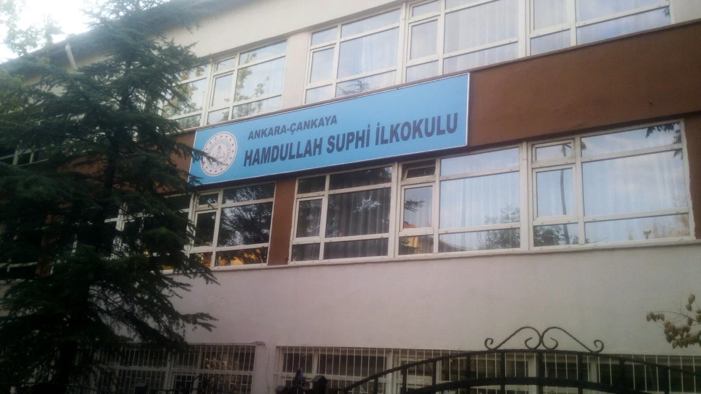
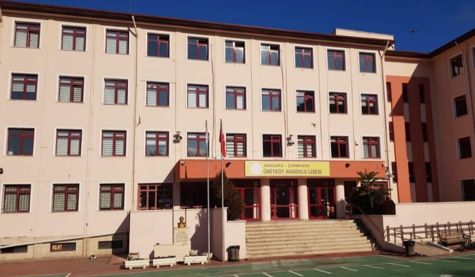

7 Mayıs 1990 Ankara doğumluyum. İlköğrenimimi Ankara Emek Mahallesinde bulunan Hamdullah Suphi Tanrıöver ilköğretim okulunda tamamladım.
Lise öğrenimimi ise Ümitköy Anadolu Lisesi'nde tamamladım.
2 Sene üniversite sınavlarına hazırlanıp Hacettepe Üniversitesi Sağlık Bilimleri Fakültesi Fizik Tedavi ve Rehabilitasyon Bölümü'nü kazandım.
Fizik Tedavi ve Rehabilitasyon Bölümü2014 yılında mezun olduktan sonra çeşitli hastaneler ve özel eğitim ve rehabilitasyon merkezlerinde birçok hasta vatandaşımızın tedavilerine katkıda bulundum.
Patika.dev ile tanışarak hep merak ettiğim bir alan olan yazılım, bilgisayar,programlama alanlarına ufak bir giriş yaptım.
Şu ana kadar olan gelişimimden çok memnunum. Bizlere kattıkları herşey için teşekkürler Patika.dev .